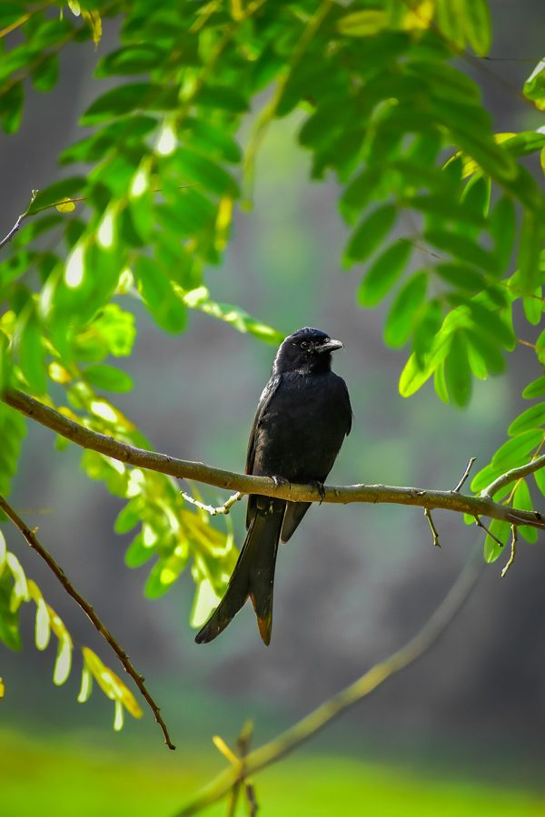

भुजंगाBlack Drongo
Dicrurus macrocercus · Dicruridae · BRD-0005

- Scientific name
- Dicrurus macrocercus Vieillot, 1817
- Family
- Dicruridae
- Hindi
- भुजंगा / कोतवाल
- Status here
- native
- IUCN
- LC
When to look कब देखें
Season not recorded.
भुजंगा / Black Drongo
Dicrurus macrocercus Vieillot, 1817 — Dicruridae
भुजंगा — खेत के ऊपर बिजली के तार पर बैठी चमकदार काली चिड़िया, गहरी दो-फाँक पूँछ के साथ — इतनी निडर कि कौए, चील और अपने से बड़े पक्षियों को भी खदेड़ देती है।
हिंदी परिचय Hindi Overview
भुजंगा या कोतवाल (Dicrurus macrocercus) पूर्वी उत्तर प्रदेश के खेतों, गाँवों, बागों और सड़कों के किनारे बहुत आसानी से दिखने वाला पक्षी है। यह अक्सर बिजली के तार, सूखी डाल, बाँस या खम्भे पर सीधा बैठकर नीचे खेत को देखता रहता है। जैसे ही टिड्डा, पतंगा, मक्खी या कोई उड़ता कीट दिखता है, यह तेजी से झपटता है और फिर उसी जगह लौट आता है। इसकी सबसे पक्की पहचान है चमकदार काला रंग और गहरी दो-फाँक वाली पूँछ। इसे कोतवाल इसलिए कहा जाता है क्योंकि यह अपने क्षेत्र का चौकीदार जैसा व्यवहार करता है — जोर से चेतावनी देता है और बड़े पक्षियों को भी भगा देता है। किसानों के लिए यह उपयोगी पक्षी है क्योंकि यह खेतों के बहुत से कीट खाता है।
Quick Identification त्वरित पहचान
| Feature | Description |
|---|---|
| Size | Medium-sized bird (about 28 cm total length); slim, upright posture |
| Plumage | Entirely glossy blue-black (sheen visible in good light); juveniles duller brown-black |
| Tail | Long and deeply forked (V-shaped or fish-tailed); outer feathers curve outward slightly |
| Bill & Legs | Short, black legs; fairly strong black bill with bristles at the base |
| Favourite perch | Prominent lookouts: electricity wires, fence posts, bare branches, or cattle backs |
| Behaviour | Sallies out to catch flying insects and returns to perch; mobs crows and raptors aggressively |
Field tip: An all-black bird with a highly distinct deeply forked tail, sitting conspicuously on an overhead wire or fence post. It regularly launches aerial loops to catch insects, and will fearlessly dive-bomb crows or kites that venture too close.
Morphology आकृति विज्ञान
Biometrics:
| Measurement | Range |
|---|---|
| Total length | 280–320 mm |
| Wing (flattened chord) | 135–150 mm |
| Tail | 130–150 mm |
| Tarsus | 19–22 mm |
| Bill (culmen from base) | 20–24 mm |
| Weight | 40–60 g |
- Size: about 28 cm total length
- Body: slim, upright passerine build; head and chest compact, wings long and pointed
- Colour: glossy black overall with blue or greenish-blue sheen in strong light
- Bill: black, fairly strong, slightly hooked at the tip; bristles around bill base help in aerial insect capture
- Tail: long and deeply forked; the most reliable field mark
- Legs and feet: black; adapted for gripping exposed perches
- Sex differences: sexes similar in field; juveniles are duller blackish-brown with some pale scaling or spotting below
Vocalisations. Three main call types:
- Contact and alarm call: Shrill, metallic ti-ti-ti or harsh, double-syllabled chick-chick notes given when defending territories or mobbing predators; frequency 2.5–5.0 kHz.
- Song: A pleasant, varied series of sweet whistles, warbles, and mimicry of other bird species (including shrikes and shikras) given from a high exposed perch.
- Alarm mimicry: Highly accurate mimicry of raptor calls (such as the Shikra, Accipiter badius) produced to scare other birds away from food sources (kleptoparasitism).
हिंदी: शरीर पतला और सीधा बैठने वाला। पूरा रंग काला, धूप में नीली-हरी चमक दिख सकती है। चोंच काली और थोड़ी मजबूत। पूँछ लंबी और गहरी दो-फाँक वाली — यही सबसे भरोसेमंद पहचान है। बच्चे वयस्कों से थोड़े धूसर-भूरे और कम चमकदार दिखते हैं।
The Field Watchman — Why Kotwal Fits "कोतवाल" नाम क्यों सही है
The Hindi folk name कोतवाल is ecologically useful. A kotwal is a guard or watchman, and the Black Drongo behaves like one in open farmland. It sits high on a wire or bare branch, scans the ground and air, gives sharp calls, and reacts quickly when a predator or intruder enters its area.
This behaviour is not just bravery for its own sake. During breeding, drongos defend nests aggressively because eggs and chicks are vulnerable to crows, kites, shikras, snakes, and cats. Outside the breeding season, defending a good hunting territory keeps access to reliable prey.
Farmers and children can use this behaviour as a field clue: when a drongo suddenly starts calling and diving at something, look in that direction. It may have detected a crow, kite, snake, cat, or other disturbance before humans noticed it.
हिंदी — कोतवाल नाम क्यों सही है:
कोतवाल का मतलब चौकीदार। यह पक्षी सचमुच खेत की चौकीदारी करता दिखता है — ऊँचे तार या डाल पर बैठकर चारों तरफ देखता है। खतरा दिखते ही तेज आवाज़ करता है और बड़े पक्षियों पर भी झपटता है। अगर कोतवाल अचानक बहुत शोर करे, तो समझिए आसपास कोई कौआ, चील, साँप, बिल्ली या दूसरा खतरा हो सकता है।
Ecological Role पारिस्थितिक भूमिका
Trophic role: diurnal insectivorous predator; catches aerial and ground insects from exposed perches.
Important prey include grasshoppers, crickets, beetles, cicadas, termites, winged ants, moths, flies, bees, wasps, and other large field insects.
- Occasionally takes small vertebrates such as tiny lizards or small frogs, but insects dominate the diet.
Pest-control role: useful in crop fields because it consumes many insects that feed on crops.
Mobbing role: loudly attacks or chases larger birds, especially near nests; other small birds may benefit from its alarm behaviour.
- Often follows grazing cattle or tractors to catch insects flushed from grass and soil.
- Existing atlas connection: can prey on colourful field insects such as Stoll's Jewel Bug where available.
हिंदी: कोतवाल खेतों का कीट-शिकारी है। यह टिड्डे, भृंग, पतंगे, दीमक के उड़ते नर-मादा, मक्खियाँ और बहुत से छोटे कीट खाता है। गाय-भैंस या ट्रैक्टर के पीछे भी दिख सकता है, क्योंकि उनके चलने से कीट उड़ते हैं। बड़े पक्षियों को भगाने की आदत के कारण यह सचमुच खेत का चौकीदार लगता है।
Life Cycle / Phenology जीवन चक्र
- Active season in eastern UP: present year-round; most conspicuous in spring and summer breeding season.
- Breeding season: mainly March–July in northern India; local peak likely April–June before and during early monsoon.
- Nest: cup-shaped nest placed in a fork of an exposed tree branch; both parents defend the nest aggressively.
- Eggs: commonly 3–4 eggs; pale with darker markings.
- Young: altricial nestlings fed insects by both parents.
- Peak visibility: year-round on wires and field perches; peak vocal and territorial activity during breeding months.
- Lifespan: broad estimate 8–15 years (not a local field-measured figure).
हिंदी: यह पूर्वी उत्तर प्रदेश में साल भर दिखता है। मार्च-जुलाई में प्रजनन अधिक होता है, इसलिए उस समय इसकी आवाज़, क्षेत्र-रक्षा और बड़े पक्षियों को खदेड़ना ज्यादा दिखता है। घोंसला पेड़ की खुली दो शाखाओं के बीच कटोरे जैसा बनता है। माता-पिता दोनों बच्चों को कीट खिलाते हैं।
Prey भोजन
| Prey | Hindi name | Notes |
|---|---|---|
| Grasshoppers and crickets | टिड्डे / झींगुर | Major field prey; important in crop-edge pest control |
| Beetles | भृंग | Taken from ground, foliage, and exposed surfaces |
| Termite alates and winged ants | उड़ती दीमक / उड़ती चींटियाँ | Often caught during seasonal emergence flights |
| Moths and flies | पतंगे / मक्खियाँ | Aerial sallies from wires and branches |
| Bees and wasps | मधुमक्खी / बर्र | Taken opportunistically; handling skill reduces sting risk |
| Jewel Bug (Chrysocoris stolli) | रत्न-कीड़ा | Drongos are listed as predators of Jewel Bugs in the existing atlas entry |
| Small lizards and frogs | छोटी छिपकली / छोटा मेंढक | Occasional, not primary diet |
हिंदी: इसका मुख्य भोजन कीट हैं — टिड्डे, भृंग, पतंगे, मक्खियाँ, उड़ती दीमक और उड़ती चींटियाँ। कभी-कभी छोटी छिपकली या छोटा मेंढक भी ले सकता है, लेकिन इसे मुख्य रूप से कीटभक्षी पक्षी ही समझना चाहिए।
Predators / Natural Enemies शत्रु प्रजातियाँ
| Predator | Hindi | Where to observe |
|---|---|---|
| Shikra (Accipiter badius) | शिकरा | Orchards, village groves, field-edge trees; may take fledglings or adults opportunistically |
| Black Kite (Milvus migrans) | चील | Open villages and towns; more likely nest threat or scavenging/opportunistic predator |
| House Crow (Corvus splendens) | कौआ | Nest predator risk; eggs and chicks vulnerable if nest is found |
| Domestic cat | बिल्ली | Grounded fledglings around houses and gardens |
| Snakes, including rat snakes | साँप / धामिन | Tree nests may be raided where branches are accessible |
Agricultural / Human Relevance कृषि और मानव संबंध
Beneficial: consumes large numbers of crop-field insects; useful natural pest-control bird in rice, wheat, vegetable, and fodder landscapes.
- Beneficial: perches on wires, poles, and cattle, using human-modified landscapes efficiently without needing dense forest.
Harmful effects: no serious direct harm to crops or people.
- Possible conflict: may occasionally catch honeybees or other beneficial insects, but its overall role in open farmland is insect-predator balance, not crop damage.
Pesticide risk: broad-spectrum insecticide use reduces prey and may expose drongos through contaminated insects.
Cultural/folk relevance: the name कोतवाल captures its alarm-calling and territory-guarding behaviour.
हिंदी: किसानों के लिए यह लाभदायक पक्षी है। यह खेतों में कीट खाता है और फसल को सीधा नुकसान नहीं पहुँचाता। बिजली के तार, खम्भे और पेड़ इसके लिए शिकार देखने की चौकी बन जाते हैं। कीटनाशक इसके भोजन को कम कर सकते हैं और जहरीले कीट खाने से इसे नुकसान भी हो सकता है।
Expected Locally स्थानीय रूप से अपेक्षित
Not a field record. Written from published accounts for eastern Uttar Pradesh. No confirmed local sighting yet — if you have seen it, that is what the atlas needs.
अभी तक स्थानीय पुष्टि नहीं। यह विवरण प्रकाशित स्रोतों से है, किसी अवलोकन से नहीं।
Abundant resident observed year-round throughout Basti district. The species is highly visible in all rural habitats, constantly using electrical wiring and dry bamboo poles as foraging lookouts. During April–June, nesting pairs are commonly found aggressively chasing off larger birds (such as House Crows and Black Kites) that venture near their nesting trees, which are often mature Neem or Peepal trees.
Distribution वितरण
Global range: Widespread across South and Southeast Asia, from southeast Iran through India, Nepal, Bangladesh, Sri Lanka, southern China, Indochina, and western Indonesia.
In India: Widespread throughout the plains and peninsular regions of India, extending up to about 2,000 m elevation in the outer Himalayas.
In Uttar Pradesh: Abundant year-round resident across all districts of Uttar Pradesh, commonly found in open habitats, farmlands, and village borders.
In Basti district / eastern UP: Extremely common year-round resident throughout Basti district; frequently seen perching on electricity wires, bamboo stakes, and cattle backs in agricultural landscapes.
Range notes: No significant range changes documented.
Research Questions शोध प्रश्न
Anyone can investigate these | कोई भी इन प्रश्नों की जाँच कर सकता है
- Which perches does Black Drongo use most in your village? / आपके गाँव में कोतवाल सबसे ज़्यादा कहाँ बैठता है? — Count 50 perch observations: electric wire, tree, fence post, cattle, crop stake, or building.
- How many insect-catching flights happen in 30 minutes? / 30 मिनट में यह कितनी बार कीट पकड़ने उड़ता है? — Watch one perched bird and record every sally and return.
- Does it follow cattle or tractors? / क्या यह गाय-भैंस या ट्रैक्टर के पीछे चलता है? — During ploughing or grazing, record whether drongos follow and what insects are flushed.
- When does nest defence begin each year? / हर साल घोंसले की रक्षा वाला व्यवहार कब शुरू होता है? — Record first date of repeated alarm calls or mobbing near a nest tree.
- Which larger birds does it mob locally? / यह स्थानीय रूप से किन बड़े पक्षियों को खदेड़ता है? — List species chased: crow, kite, shikra, roller, myna, or others; record month and location.
Similar Species मिलती-जुलती प्रजातियाँ
| Species | How to tell apart | Hindi |
|---|---|---|
| Ashy Drongo (Dicrurus leucophaeus) | Greyer, not glossy jet-black; some populations migratory/wintering; tail fork less sharply black-looking in field | धूसर भुजंगा |
| Hair-crested Drongo (Dicrurus hottentottus) | Larger, forest/grove bird; tail more complex and outer feathers may curl upward; not typical open-field wire bird | जंगली भुजंगा |
| Crow species (Corvus spp.) | Much larger, heavier bill, no deep forked tail; different flight and call | कौआ |
| Black Redstart male (Phoenicurus ochruros) | Much smaller; orange-red tail; winter visitor; pumps tail | छोटा, लाल पूँछ वाला |
| Greater Racket-tailed Drongo (Dicrurus paradiseus) | Has long racket-shaped tail streamers; forest species, not common open farmland bird | रैकेट-पूँछ भुजंगा |
Field rule: A glossy black open-country bird on a wire, with a deep V-shaped forked tail and repeated sallies for insects, is Black Drongo in eastern UP farmland.
Taxonomy & Classification वर्गीकरण
Original description. Dicrurus macrocercus was described by Louis Pierre Vieillot in 1817 in his work Nouveau Dictionnaire d'Histoire Naturelle, Volume 9 (p. 588). Type locality: "India" (subsequently restricted to Madras by Hartert in 1919). The genus name Dicrurus is derived from the Greek dikros (forked) and oura (tail), alluding to its V-shaped tail. The species name macrocercus combines the Greek makros (long) and kerkos (tail), referencing its long tail.
Subspecies. Four subspecies are currently recognised:
| Subspecies | Authority | Range | Notes |
|---|---|---|---|
| D. m. albirictus | (Hodgson, 1836) | Iran, Pakistan, northern India, Nepal, Bangladesh | UP subspecies; larger, with a distinct white rictal spot at gape |
| D. m. macrocercus | Vieillot, 1817 | Peninsular India south of Vindhyas | Nominate form; smaller, without or with reduced rictal spot |
| D. m. cathoecus | Swinhoe, 1871 | China, Myanmar, Thailand, Indochina | Migratory northern populations |
| D. m. harterti | Baker, 1918 | Taiwan | Shortest tail of all subspecies |
Birds in eastern UP belong to the large-billed, white-spotted form D. m. albirictus.
Family and order placement. This species belongs to the order Passeriformes and family Dicruridae (drongos). Dicruridae is a family of insectivorous passerine birds containing 30 species, all within the genus Dicrurus, distributed throughout the Old World tropics.
Phylogenetic notes. Molecular phylogenetic studies (such as those by Pasquet et al., 2007) show that the family Dicruridae is monophyletic and closely related to the monarchs (Monarchidae) and fantails (Rhipiduridae). Within the genus, Dicrurus macrocercus is closely related to the Black Drongo-like complex including Dicrurus adsimilis (Fork-tailed Drongo of Africa).
IUCN status rationale. Assessed as Least Concern (LC). The species has an extremely large geographic distribution and is highly adaptable to human-dominated agricultural landscapes, where it utilizes artificial perches (such as power lines), resulting in a stable population.
Photo Gallery फोटो गैलरी
फोटो निर्देश: सुबह की धूप में चमकदार काला रंग और दो-फाँक पूँछ की फोटो लें। बिजली के तार पर बैठा हुआ या गाय की पीठ पर बैठा हुआ कोतवाल — सबसे अच्छी फोटो।
Photos needed आवश्यक फोटो
- [ ] Adult on electric wire showing forked tail (तार पर बैठा वयस्क — दो-फाँक पूँछ)
- [ ] Side view in sunlight showing glossy black sheen (धूप में चमकदार काला रंग)
- [ ] Insect-catching flight from perch (कीट पकड़ने की उड़ान)
- [ ] Bird perched on cattle or near grazing animals (पशु के पास या ऊपर बैठा)
- [ ] Nest tree or nest fork, photographed from a respectful distance (घोंसले वाला पेड़ — दूरी से)
- [ ] Mobbing a crow/kite/shikra if safely observable (बड़े पक्षी को खदेड़ते हुए)
Atlas Connections संबंधित प्रजातियाँ
- Stoll's Jewel Bug — drongos are listed as predators of Jewel Bugs in the existing Jewel Bug entry (INS-0003)
- Oriental Garden Lizard — shares exposed perches and open village hunting habitat; Black Drongo may occasionally take very small lizards (REP-0001)
- Indian Roller — both use wires and exposed perches over farmland as sit-and-wait insect predators (BRD-0003)
- Peepal — uses village trees such as peepal as lookout, calling, roosting, and possible nesting perches (FLR-0006)
- Giant Milkweed — Calotropis patches host insects such as Jewel Bugs and Cotton Bugs that attract insectivorous birds (FLR-0002)
- Mound-building Termite — major predator of termite alates during monsoon emergence flights (SFL-0001)
References संदर्भ
- Vieillot, L.P. (1817). Nouveau Dictionnaire d'Histoire Naturelle. Volume 9. Paris, p. 588. [original description]
- Hodgson, B.H. (1836). On the Drongo family of birds. Asiatic Researches, 19, 325–342. [description of albirictus]
- Grimmett, R., Inskipp, C. & Inskipp, T. (2011). Birds of the Indian Subcontinent. 2nd edition. Christopher Helm, London.
- Rasmussen, P.C. & Anderton, J.C. (2012). Birds of South Asia: The Ripley Guide. 2nd edition. Smithsonian Institution and Lynx Edicions, Washington.
- Ali, S. & Ripley, S.D. (1997). Handbook of the Birds of India and Pakistan, Vol. 5. 2nd edition. Oxford University Press, New Delhi.
- Pasquet, E. et al. (2007). The phylogeny and biogeography of the drongos (Dicruridae). Molecular Phylogenetics and Evolution, 45(1), 269-280.
- IUCN Red List of Threatened Species — Dicrurus macrocercus.
- GBIF Occurrence Data — Dicrurus macrocercus, Uttar Pradesh (2010–2025).
Source file: species/fauna/birds/black_drongo.md